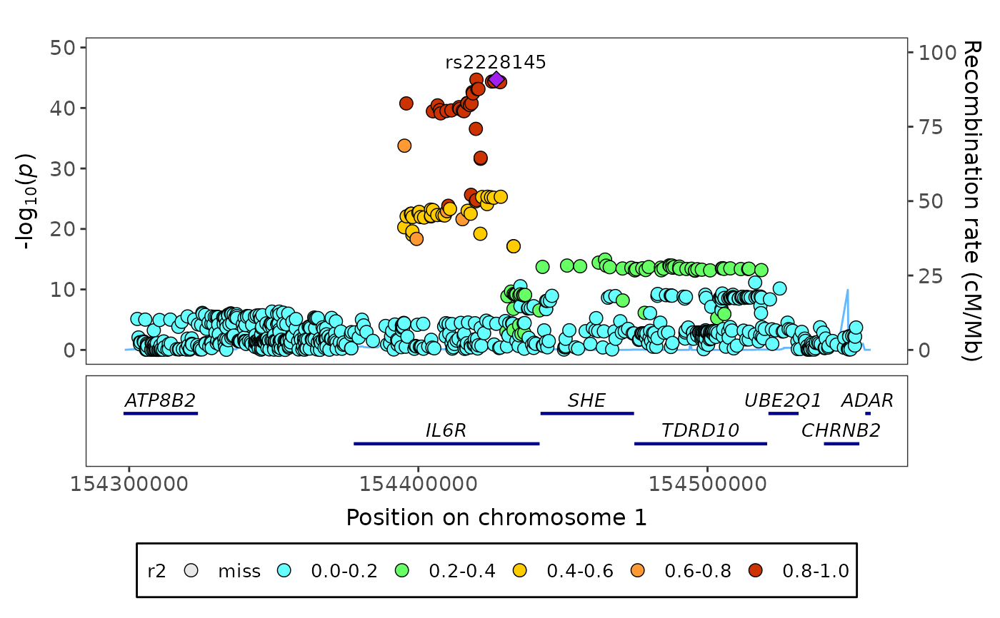

fig_region creates a regional plot, i.e. a scatter graph of
genomic markers associations (e.g. log10(p-values)) with a gene bar
underneath.
Usage
fig_region(
data,
corr = NULL,
corr_top = NULL,
top_marker = NULL,
r2 = FALSE,
build = 38,
prob = FALSE,
interactive = FALSE,
thresh = NULL,
thresh_colour = "grey50",
x_min = NULL,
x_max = NULL,
y_title = NULL,
point_size = 3,
alpha = 1,
genebar = TRUE,
genebar_ntracks = NULL,
genebar_label_pos = 3.6,
genebar_label_size = 4,
genebar_line_size = 0.8,
label_size = 3.5,
highlights = NULL,
highlights_cat = NULL,
highlights_label = TRUE,
highlights_shape = 22,
highlights_nolabel_shape = 21,
highlights_sort = TRUE,
highlights_colours = NULL,
highlights_title = "Group",
title = NULL,
title_size = 16,
title_center = FALSE,
axis_text_size = 14,
axis_title_size = 16,
legend = TRUE,
legend_text_size = 12,
legend_title_size = 12,
point_padding = 0,
nudge_x = 0,
nudge_y = 0,
nudge_y_top = 0.06,
ylim_prob = 1,
assoc_plot_size = NULL,
genebar_plot_size = NULL,
legend_plot_dist = NULL,
plot_width = 9,
plot_height = 7,
girafe = TRUE
)Arguments
- data
a
data.framecontaining the association statistics for each marker within a genomic region with the following columns:markerthe genomic marker identifier (e.g. rsID)chrthe chromosome for each genomic markerposthe genomic position for each genomic marker and one of the following:pvaluethe association p-value for each genomic markerzthe association z-statistic for each genomic markerprobthe association probability for each genomic marker
- corr
a
numericmatrixof correlation statistics between the markers (default:NULL)- corr_top
a
numericvectorof correlation statistics between the top marker and the rest of the markers (default:NULL)- top_marker
a
charactervalue depicting the marker to plot the correlation statistics of the rest of the markers against (default:NULL)- r2
a
logicalvalue indicating whether the set of correlation statistics entered incorrorcorr_topare squared (default:FALSE)- build
a
numericvalue indicating the genome build used to determine genomic position (default:38representing human assembly GRCh38)- prob
a
logicalvalue indicating whether probability statistics should be plotted instead of -log10(p-values) (default:FALSE)- interactive
a
logicalvalue indicating whether the plot should be interactive (default:FALSE)- thresh
a
numericvectorproviding the p-value thresholds to be plotted (default:NULL)- thresh_colour
a
charactervectorindicating the colours of the lines indicating the p-value thresholds (default:"grey50")- x_min
a
numericvalue depicting the minimum plotted x-axis value representing the start of the genomic region (default:NULL)- x_max
a
numericvalue depicting the maximum plotted x-axis value representing the end of the genomic region (default:NULL)- y_title
a
characterstring defining the title of the y-axis (default:NULL)- point_size
a
numericvalue indicating the size of each point (default:3)- alpha
a
numericvalue adjusting the opacity of colours representing the correlation statistics (default:1)- genebar
a
logicalvalue indicating whether bars representing the genes should be included in the plot (default:TRUE)- genebar_ntracks
an
integervalue indicating the number of tracks to be included in the gene bar (default:NULL)- genebar_label_pos
a
numericvalue indicating the relative position of gene labels with respect to each gene bar (default:3.6)- genebar_label_size
a
numericvalue defining the size of each gene label (default:4.25)- genebar_line_size
a
numericvalue defining the line size of each gene bar (default:0.8)- label_size
a
numericvalue indicating the size of each label (default:3.5)- highlights
a
charactervectordefining a set of markers to highlight in the plot (default:NULL)- highlights_cat
a
charactervectordefining the category for each highlighted marker (default:NULL)- highlights_label
a
logicalvalue indicating whether highlighted points should be labelled (default:TRUE)- highlights_shape
a value defining the shape for highlighted points (default:
22)- highlights_nolabel_shape
a value defining the shape for points which are not highlighted (default:
21)- highlights_sort
a
logicalvalue indicating whether to sort highlight group label levels (default:TRUE)- highlights_colours
a
charactervectorspecifying colours for highlighted points (default:NULL)- highlights_title
a
characterstring providing a title for the legend corresponding to the highlighted points (default:"Group")- title
a
characterstring providing a title for the plot (default:NULL)- title_size
a
numericvalue indicating the size of the title text for the plot (default:NULL)- title_center
a
logicalvalue indicating whether the plot title should be centered (default:FALSE)- axis_text_size
a
numericvalue indicating the size of the axis text for the plot (default:14)- axis_title_size
a
numericvalue indicating the size of the axis title text for the plot (default:16)- legend
a
logicalvalue indicating whether a legend corresponding to the displayed groups should be included (default:TRUE)- legend_text_size
a
numericvalue indicating the size of the legend text (default:12)- legend_title_size
a
numericvalue indicating the size of the legend title (default:12)- point_padding
a
numericvalue indicating the relative distance of labels from plotted points (default:0- nudge_x
a
numericvalue indicating the degree to which label placement on the x-axis should be adjusted (default:0)- nudge_y
a
numericvalue indicating the degree to which label placement on the y-axis should be adjusted (default:0)- nudge_y_top
a
numericvalue indicating the degree to which the top marker should be adjusted on the y-axis by a proportion of the y-axis limit (default:0.06)- ylim_prob
a
numericvalue defining the upper y-axis limit for probability plots (default:1)- assoc_plot_size
a
numericvalue determining the size of the association plot (default:NULL)- genebar_plot_size
a
numericvalue determining the size of the gene bar plot (default:NULL)- legend_plot_dist
a
numericvalue defining the distance and size of the legend from the bottom of the regional plot (default =NULL)- plot_width
a
numericvalue indicating the width of the plot (default:9)- plot_height
a
numericvalue indicating the height of the plot (default:7)- girafe
a
logicalvalue indicating whether an interactive plot should be turned into an interactive graphic using girafe() (default =TRUE)
Value
fig_region returns a regional plot visualising associations
of markers within a genomic region.
Author
James Staley jrstaley95@gmail.com
Examples
fig_region(
data = geni.plots::geni_test_region$assoc,
corr = geni.plots::geni_test_region$corr,
build = 37,
axis_text_size = 11,
axis_title_size = 12,
genebar_label_size = 3.5,
legend_text_size = 10,
legend_title_size = 10
)

# Notes:
# (i) corr has to have the same markers as assoc in the same order
# (ii) by default fig_region assumes corr contains correlation
# statistics that have not been squared